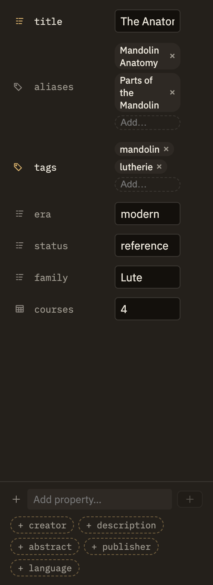

Docs/Right sidebar/Properties
Properties
Every note can carry a few pieces of structured information — a title, some tags, a date, and anything else you find useful. The Properties panel is a friendly way to view and edit those properties as a tidy list, so you can add, change, and remove them without typing anything special. It's just another way to work with the same information you can also edit at the top of the note itself, and the two always stay in step. When the note has a type, the panel also knows which fields that kind of note is expected to have, and puts them first.
Where it lives
Properties is one of the panels in the right sidebar that describe the note you're looking at, alongside Outline, Footnotes, Tags, and Tables. Open it and you'll see the current note's properties laid out as a list of rows. Switch to another note and the panel simply shows that note's properties instead.
Editing, adding, and removing properties
Each property is a row: its name on the left, its value on the right, with a small icon showing what kind of value it is. The value's control fits its type — a text box for text, a checkbox for yes/no, a date picker for dates, chips for tags, and so on.
You're not limited to Minerva's suggested names. Add any property name you like and it works exactly the same way — it's just shown in a slightly quieter color so you can tell your custom ones apart from the familiar ones.
When the note has a type
Give a note a type — Book, Person, Meeting — and the panel gains a section above the ordinary list, headed with the type's icon and name. It holds the fields that kind of note is expected to have.
type line itself — sit under an "Other" divider and behave exactly as they always have.Emptying one of the type's fields removes the property from the note rather than leaving it blank. The field itself stays on the form, because the type still declares it — so you can fill it in again whenever you like.
When a value doesn't fit
The panel quietly protects you from entering something that doesn't make sense, without popups or warnings:
- A number field ignores anything that isn't a number, leaving the property as it was until you type a real one.
- The link picker leaves a property unchanged if you clear it out, rather than saving an empty link.
- For richer values that don't fit a simple control — a nested list or grouping — the panel shows them as read-only and invites you to edit them at the top of the note instead.

Two ways to edit, one set of properties
Everything the panel does, you can also do by editing the properties at the top of the note directly — and the two always match, whichever way you make a change. Reach for the panel when you want quick, mistake-free edits: flip a checkbox, pick a date, add a tag. Edit the note directly when you want to rearrange properties or write a value the panel doesn't have a control for yet.
If you find yourself adding the same handful of properties to note after note, that's a sign they want to be a type — declare the fields once in Settings → Object Types and every note of that kind gets the form for free.